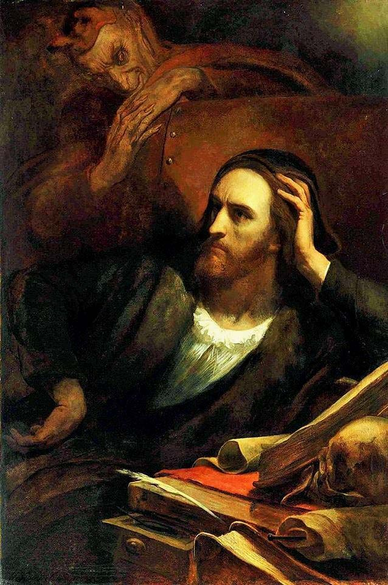

Пролог на небесах: Господь и Мефистофель заключают пари о судьбе человеческой души. Мефистофель утверждает, что любого человека можно совратить и погубить, а Господь верит в добрую природу человека и его способность к искуплению. Испытуемым становится учёный Фауст.
Учёный Генрих Фауст, разочарованный в науке, заключает сделку с дьяволом Мефистофелем. В обмен на земные наслаждения он отдаёт свою душу. Фауст влюбляется в простую девушку Маргариту (Гретхен), но их любовь приводит к трагедии: Гретхен гибнет, а Фауст остаётся с чувством вины и отправляется в дальнейшие странствия.
Фауст путешествует во времени, встречает Елену Прекрасную (символ античной красоты), помогает императору. В финале, ослеплённый, он слышит стройку на благо людей и произносит «Остановись, мгновенье!», но его душа спасается, потому что он всю жизнь стремился вперёд.